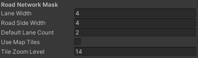
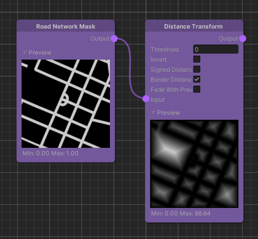

Road Network Mask
Overview
The Road Network Mask node generates a map where all white pixels represent either a street or a parking lot.

Detailed Explanation
We use OpenStreetMap data to generate this mask containing the roads and parking lots. We generally do not include small service ways. However, to avoid gaps between the road network and parking lots we do add service ways connected to parking lots to the road network.
Being on a road or parking lot means that the mask contains a 1 at this location and the opposite is represented by a 0.
Settings
While the node itself doesn't feature any parameters we can still configure this node in the global settings: Project Settings > holoride > Road Network Mask.

| Name | Type | Description |
|---|---|---|
| Lane Width | float | The default width of each road lane. |
| Road Side Width | float | The default width added to both sides of the road. |
| Default Lane Count | int | The default lane count if not provided by the map service. |
| Use Map Tiles | bool | Use downloaded map tile images instead of offline rendered images that have higher quality. |
| Tile Zoom Level | int | When using the map tiles this defines the size/zoom of the map tiles. |
Use Cases
Distance Transform Example

One common use case for this node is in combination with the Distance Transform node. This can be used in a lot of cases including feeding it into Texture Layers for texturing or spawning objects a certain distance away from the road network.